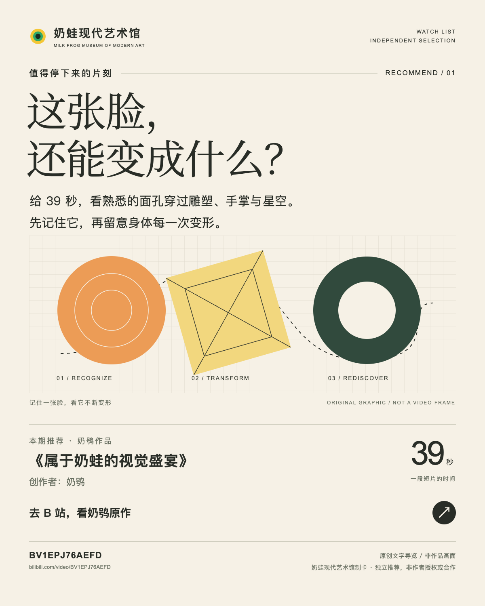

研究文章 · 4 分钟
奶龙与奶蛙的区别和多层起源
官方角色的诞生、网络变体的底图、动作与笑声，并不共享一张出生证明。先把能够确认的历史与仍在流传的故事分开。
阅读全文 ↗五篇创作研究与四篇独立作品导览：区分品牌、社区衍生与项目采用的形象，观察角色、媒介、空间与动画镜头，循署名链接回到作者原站。
官方角色的诞生、网络变体的底图、动作与笑声，并不共享一张出生证明。先把能够确认的历史与仍在流传的故事分开。
阅读全文 ↗短线嘴没有替整幅画决定情绪。奶蛙的身体、空位、材料和题名共同工作；Hello Kitty与蛋黄哥则提供了两种不同的对照。
阅读全文 ↗手脚接错需要改，瓷砖像水却可以留下。区别在哪里？从四件馆藏作品看身份维护、异常设计，以及谁为最终选择负责。
阅读全文 ↗图像为什么被叫作“抽象”，要回到它被谁、在什么场合、以什么态度使用。可改写的意义与可集中经营的价值，也可能同时存在。
阅读全文 ↗
先看黄色身体怎样变成展品，再看熟悉的五官怎样长进建筑、山石和茶杯。两支短片，合计77秒。 本次增补作者系列背景、材质与地景比较，连看四作约2分17秒。
阅读全文 ↗
跟着瓷砖、台阶和水面往里走。奶鸮《来自奶龙的池核美学》的好看，藏在熟悉空间里那些微妙的偏差。 本次增补第一作与《池核美学2》的色彩、砖格与可进入路径对照。
阅读全文 ↗从梨形身体到黄色卵形，从三视图到选择题合集，辨认变体怎样被命名、固定与继续改写。
阅读全文 ↗从花海群像到公开对比版，观察换角怎样维持动画的构图、距离与情绪。
阅读全文 ↗从局部进入空间，再等待名画构图与笑脸收束，回看两部短片的镜头组织。
阅读全文 ↗